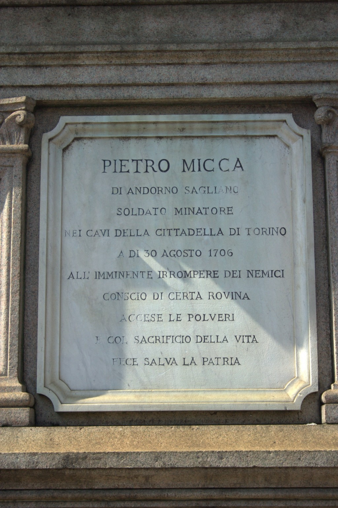
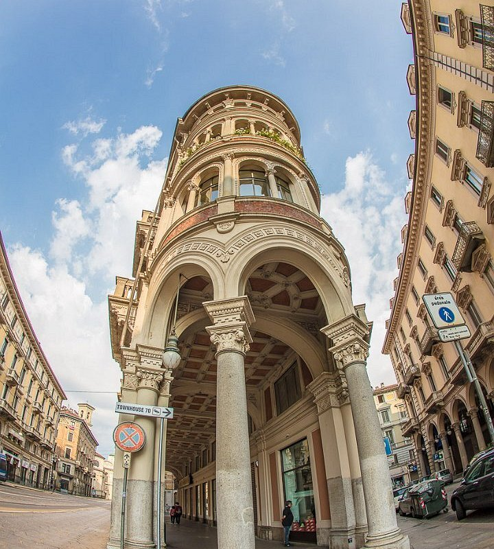
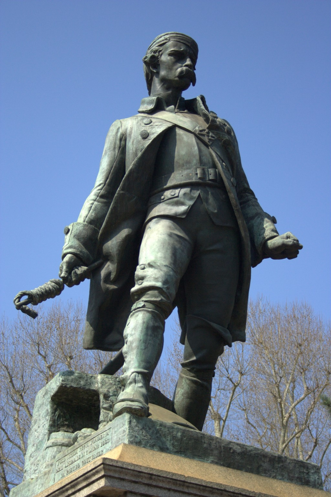

📝 Pagina di esempio: scuola, classe e testimonianze sono immaginarie, create a scopo dimostrativo in attesa delle prime adesioni reali.
Via Pietro Micca
Una delle vie più eleganti del centro storico torinese, dedicata al minatore-eroe che nel 1706 salvò la città dall'assedio franco-spagnolo al costo della propria vita.
...per via dell'eroe e minatore Pietro Micca
Siamo partiti da una domanda semplice, scritta su una targa che passiamo ogni giorno: per via di chi si chiama così questa strada? La risposta ci ha portati molto lontano dal nostro isolato. Pietro Micca nacque nel 1677 a Sagliano, un piccolo paese del Biellese: già qui la via ci ha fatto uscire da Torino e salire di scala, dalla strada alla regione.
Nel 1706 Micca lavorava come minatore militare nelle gallerie sotto la Cittadella, durante l'assedio di Torino. Ma quell'assedio non era una vicenda solo torinese: era un episodio della Guerra di successione spagnola, un conflitto che in quegli anni coinvolgeva mezza Europa (Francia, Spagna, Austria, i Savoia). Studiando una via del nostro quartiere siamo finiti dentro una guerra continentale.
Nella notte tra il 29 e il 30 agosto 1706 un gruppo di soldati francesi penetrò nelle gallerie. Per fermarli, Micca diede fuoco alla miccia di una mina troppo corta: morì nell'esplosione, ma salvò la guarnigione e, con essa, le sorti dell'assedio.
"Pietro Micca è un eroe vero, non da fumetto: non ha scelto di essere un eroe, ha scelto di non scappare. Ci ha fatto capire che il coraggio non è non avere paura, ma fare la cosa giusta anche quando hai paura."
– Giulia, 3ª BC'è però una cosa che ci ha colpiti più di tutte: Micca morì nel 1706, ma la via porta il suo nome solo dal 1864. Perché proprio allora? Consultando la delibera comunale in archivio abbiamo capito che l'intitolazione nacque nel clima del Risorgimento: nell'Italia appena unita si cercavano eroi che dessero un volto al coraggio e al sacrificio per la patria. Il nome di una strada, insomma, è una fonte storica: ci racconta tanto del 1706 quanto del 1864, cioè di chi decise di ricordare Micca e del perché.
Alla fine siamo tornati alla scala da cui eravamo partiti: la via che percorriamo ogni giorno, dal Teatro Alfieri a piazza Solferino. La classe ne ha percorso l'intero tracciato durante l'uscita didattica del 14 ottobre 2025, raccogliendo fotografie e intervistando i negozianti, guardando quei palazzi con occhi diversi, sapendo ora quante storie, locali ed europee, si nascondono dietro un solo nome.
La via oggi
Foto scattate dalla classe il 14 ottobre 2025. Abbiamo fotografato i palazzi liberty, le targhe stradali, le vetrine storiche e la statua di Pietro Micca in piazza Solferino.



n° 14
in pescheria storica
al Teatro Alfieri
Quattro domande a un conservatore del Museo Pietro Micca
Per verificare quello che avevamo letto e distinguere la storia dalla leggenda, abbiamo chiesto aiuto a chi studia questi fatti per mestiere. Abbiamo incontrato un conservatore del Museo Pietro Micca e dell'Assedio di Torino del 1706 e gli abbiamo rivolto, a turno, le domande preparate in classe.
Intervista raccolta dalla classe · trascrizione autorizzata.
«Meno di quanto si creda. Le fonti dirette sono poche: sappiamo con certezza dell'esplosione e del suo ruolo, ma molti dettagli del racconto si sono aggiunti dopo. Il museo serve proprio a separare i documenti dalla leggenda.»
«Sì, gran parte del sistema di contromine è conservato e visitabile. Camminare là sotto fa capire meglio di qualsiasi libro cosa fosse la guerra d'assedio del Settecento.»
«Perché ogni epoca sceglie i propri eroi. L'Italia unita da pochi anni aveva bisogno di figure che rappresentassero il sacrificio per la patria: Micca era perfetto. Il nome della via dice tanto dell'Ottocento quanto del 1706.»
«Non fermatevi alla prima fonte. Confrontatene sempre almeno due e chiedetevi chi l'ha scritta e quando. È così che una ricerca diventa seria.»
Informazioni sulla via
(1677–1706)
Cosa ci racconta questa via
Dopo la visita ogni studente ha scritto un breve testo sulla via. Ne riportiamo alcuni.
"La via Pietro Micca sembra normale ma se cammini lentamente e guardi in su vedi che i palazzi sono tutti diversi e belli. Uno aveva delle facce di pietra sopra le finestre e io le ho fotografate."
– Marco, 3ª B"Ho chiesto alla signora del negozio di cappelli da quanti anni stava lì. Mi ha detto che sua nonna aveva aperto il negozio nel 1952. Mi sembra una cosa incredibile: mentre tutto cambiava, lei vendeva cappelli."
– Sofia, 3ª B"Sotto Via Pietro Micca ci sono le gallerie dove è morto l'eroe. Quando cammino sopra penso che lì sotto c'è la storia vera."
– Luca, 3ª BCosa abbiamo fatto del nostro lavoro
La pagina non è rimasta in classe. L'abbiamo presentata al Consiglio comunale dei ragazzi e delle ragazze di Torino e, in una visita conclusiva, ai conservatori del Museo Pietro Micca, che ci hanno segnalato un paio di imprecisioni poi corrette. Il contributo è stato infine inviato al database nazionale di Via Per Via, dove chiunque può consultarlo: non è un compito per il voto, ma un piccolo tassello pubblico sulla memoria della città.
"La cosa più difficile non è stata trovare le informazioni, ma metterci d'accordo su quali fossero davvero affidabili. Lavorando in gruppo abbiamo imparato a discutere le fonti invece di fidarci della prima che trovavamo."
– Riflessione finale della classe 3ª BCome abbiamo fatto la ricerca
La ricerca si è svolta in tre fasi: prima la raccolta di informazioni da fonti diverse, poi il confronto critico tra di esse, infine l'uscita sul campo del 14 ottobre 2025 con fotografie e interviste. Abbiamo distinto le fonti primarie (documenti d'epoca, la delibera d'archivio) dalle fonti secondarie (libri e schede che raccontano quei fatti a distanza di tempo), e dove le fonti erano discordanti l'abbiamo segnalato invece di scegliere a caso.
- Fonte primaria Delibera comunale di intitolazione della via (1864), consultata in archivio storico cittadino.
- Fonte primaria Sopralluogo al sistema di gallerie e contromine, con schede del Museo Pietro Micca e dell'Assedio di Torino del 1706.
- Fonte secondaria Torino, storia di una città (volume della biblioteca scolastica).
- Fonte secondaria Materiali del Museo Nazionale del Risorgimento Italiano sul contesto ottocentesco dell'intitolazione.
- Fonte orale Intervista al conservatore del museo e conversazioni con i commercianti della via (14/10/2025).
Come è stato scritto questo testo. Ogni sezione è passata attraverso quattro momenti: una bozza individuale, la revisione tra pari in piccolo gruppo, la revisione con la docente e la stesura definitiva pubblicata qui. Nulla è stato copiato e incollato: le fonti sono state rielaborate con parole nostre.